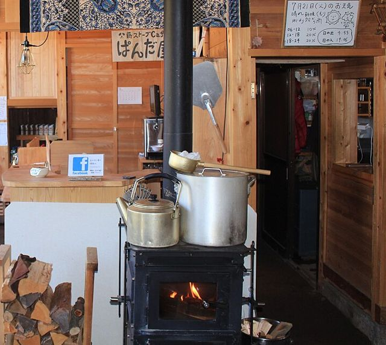
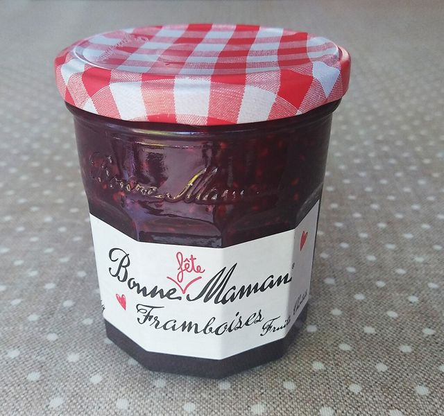
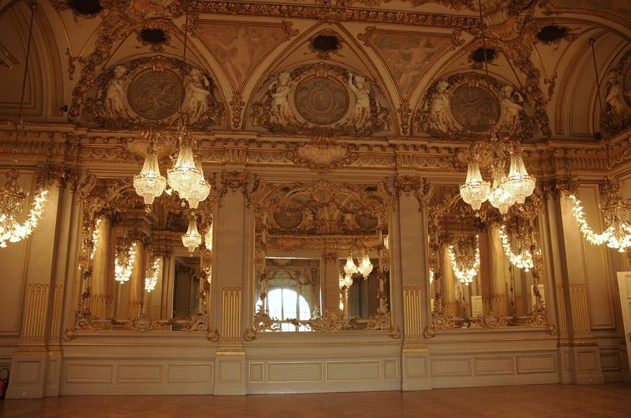
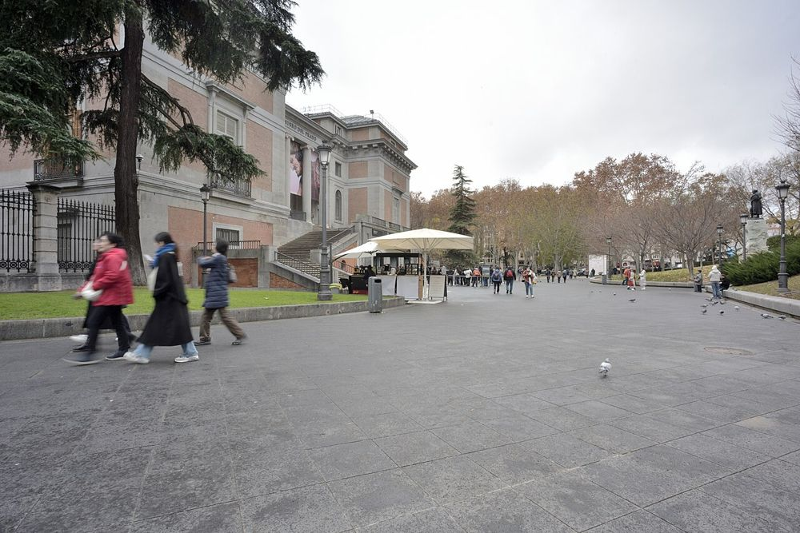

Il presente e l'imperfetto dei verbi regolari più frequenti
Touchez pour écouter et IT pour lire la traduction italienne.
Toccate l'altoparlante per ascoltare e IT per leggere la traduzione italiana.
1
Vocabulaire, expressions et grammaire
Lessico, espressioni e grammatica
un pécule
nom masculinITun gruzzolo, un piccolo capitale messo da parte
Avec les années, elle s'est constitué un joli pécule.
Con gli anni si è messa da parte un bel gruzzolo.
On dit souvent se constituer un pécule ou mettre de côté un pécule.
Si dice spesso « se constituer un pécule » o « mettre de côté un pécule » (mettere da parte un gruzzolo).
investir
verbe · 2e groupeITinvestire
Avant d'investir, il est prudent de bien connaître son profil de risque.
Prima di investire, è prudente conoscere bene il proprio profilo di rischio.
Investir dans + nom : investir dans l'immobilier. Verbe du 2e groupe : nous investissons, j'investissais.
Investire in + nome: investir dans l'immobilier (investire nel settore immobiliare). Verbo del 2° gruppo: nous investissons, j'investissais.
Pensez-y !
impératif + yITCi pensi! · Pensateci!
Une exposition Monet ouvre la semaine prochaine. Pensez-y !
Apre una mostra di Monet la settimana prossima. Ci pensi!
C'est une décision importante : penses-y avant de signer.
È una decisione importante: pensaci prima di firmare.
Ton frère est seul ce week-end ? Pense à lui !
Tuo fratello è solo questo fine settimana? Pensa a lui!
Penses-y !
Pensaci!
Pensons-y !
Pensiamoci!
Pensez-y !
Pensateci! · Ci pensi!
Penser à quelque chose → y. À l'impératif, le -s revient devant y : pense → penses-y (pour la liaison). Pour une personne, on garde à + pronom tonique : pense à ta mère → pense à elle.
Penser à + cosa → y. All'imperativo, davanti a y torna la -s: pense → penses-y (per la liaison). Per una persona si usa à + pronome tonico: pense à elle (pensa a lei).
la nouveauté
nom fémininITla novità
La grande nouveauté de cette saison, c'est la réouverture d'une salle du musée.
La grande novità di questa stagione è la riapertura di una sala del museo.
Au pluriel, en librairie : les nouveautés.
Al plurale, in libreria: les nouveautés (le novità editoriali).
se confier à quelqu'un
verbe pronominalITconfidarsi con qualcuno
Quand il avait un souci, il se confiait à son meilleur ami.
Quando aveva un problema, si confidava con il suo migliore amico.
En français, on se confie à quelqu'un (et non « avec »). Avec un pronom : il se confie à moi, à elle.
In francese ci si confida « à » qualcuno (non « avec »). Con un pronome: il se confie à moi, à elle (si confida con me, con lei).
un poêle à bois
nom masculinITuna stufa a legna

un poêle à bois · una stufa a legna
Dans la maison de campagne, un vieux poêle à bois chauffait toute la pièce.
Nella casa di campagna, una vecchia stufa a legna riscaldava tutta la stanza.
À ne pas confondre avec une poêle (féminin) = una padella. Même prononciation [pwal] !
Da non confondere con une poêle (femminile) = una padella. Stessa pronuncia!
Fais chauffer un peu d'huile dans la poêle.
Fai scaldare un po' d'olio nella padella.
un pot de confiture
nom masculinITun barattolo di marmellata

un pot de confiture · un barattolo di marmellata
Chez ma grand-mère, il y avait toujours un pot de confiture d'abricots sur la table.
Da mia nonna c'era sempre un barattolo di marmellata di albicocche sulla tavola.
Un pot = un barattolo, un vasetto : un pot de miel, un pot de yaourt.
Un pot = un barattolo, un vasetto: un pot de miel (un vasetto di miele), un pot de yaourt.
être athée
locution verbaleITessere ateo · atea
Il est athée, mais il adore visiter les églises romanes pour leur architecture.
È ateo, ma adora visitare le chiese romaniche per la loro architettura.
Athée est identique au masculin et au féminin : il est athée, elle est athée. Le h ne se prononce pas.
Athée è uguale al maschile e al femminile: il est athée, elle est athée. La h non si pronuncia.
le rang social
nom masculinITil rango sociale, la posizione sociale
Chez Balzac, le rang social décide souvent du destin des personnages.
In Balzac il rango sociale decide spesso il destino dei personaggi.
près de · près de là
locutionITvicino a · lì vicino
J'habite près de Florence.
Abito vicino a Firenze.
Le café est près du musée.
Il caffè è vicino al museo.
L'hôtel est près de la gare.
L'albergo è vicino alla stazione.
Nous avons dîné près des quais de la Seine.
Abbiamo cenato vicino ai lungosenna.
Tu connais le Panthéon ? Ma fille habite près de là.
Conosci il Panthéon? Mia figlia abita lì vicino.
près de + le → près du
vicino al
près de + la → près de la
vicino alla
près de + les → près des
vicino ai / alle
près de là
lì vicino (senza nome dopo)
près d'ici
qui vicino
une exposition (au musée)
nom fémininITuna mostra

le musée d'Orsay · il museo d'Orsay
Nous avons vu une très belle exposition au musée d'Orsay.
Abbiamo visto una bellissima mostra al museo d'Orsay.
Familier : une expo. On dit voir ou visiter une exposition. En finance, l'exposition au risque = l'esposizione al rischio.
Familiare: une expo. Si dice voir o visiter une exposition. In finanza, l'exposition au risque = l'esposizione al rischio.
hériter (de)
verbeITereditare
Il a hérité d'une petite maison en Toscane.
Ha ereditato una casetta in Toscana.
Elle a hérité ce tableau de son oncle.
Ha ereditato questo quadro da suo zio.
Hériter de quelque chose · hériter quelque chose de quelqu'un.
Hériter de + cosa · hériter + cosa + de + persona (ereditare qualcosa da qualcuno).
l'héritage
nom masculinITl'eredità
Cet héritage comprenait aussi une magnifique bibliothèque.
Questa eredità comprendeva anche una magnifica biblioteca.
Attention au genre : un héritage (masculin), alors que « eredità » est féminin en italien.
Attenzione al genere: un héritage è maschile, mentre « eredità » è femminile in italiano.
faire de la polémique
locutionITfare polemica
Je ne veux pas faire de polémique, mais ce tableau mérite une meilleure place.
Non voglio fare polemica, ma questo quadro merita un posto migliore.
Le verbe polémiquer existe, mais il s'utilise très peu à l'oral : on dit plutôt faire de la polémique. À la forme négative : ne pas faire de polémique.
Il verbo polémiquer esiste, ma si usa pochissimo all'orale: si dice piuttosto faire de la polémique. Alla forma negativa: ne pas faire de polémique.
résoudre
verbe irrégulierITrisolvere
Nous avons résolu le problème en une matinée.
Abbiamo risolto il problema in una mattinata.
Présent : je résous, nous résolvons, ils résolvent. Participe passé : résolu. Imparfait : je résolvais.
Presente: je résous, nous résolvons, ils résolvent. Participio passato: résolu. Imperfetto: je résolvais.
2
Le présent des verbes réguliers
Il presente dei verbi regolari
Florence, le Ponte Vecchio · Firenze, Ponte Vecchio
Les verbes réguliers forment trois familles. On enlève la terminaison de l'infinitif et on ajoute les terminaisons du présent.
I verbi regolari formano tre famiglie. Si toglie la desinenza dell'infinito e si aggiungono le desinenze del presente.
AVerbes en -er
parl-+eeseonsezent
parlerparlare
je parle
tu parles
il / elle / on parle
nous parlons
vous parlez
ils / elles parlent
À l'oral, je parle, tu parles, il parle et ils parlent se prononcent de la même façon : -ent ne se prononce jamais.
All'orale, je parle, tu parles, il parle e ils parlent si pronunciano allo stesso modo: -ent non si pronuncia mai.
Le soir, nous parlons de nos voyages.
La sera parliamo dei nostri viaggi.
BVerbes en -ir (2e groupe)
fin-+isisitissonsissezissent
finirfinire
je finis
tu finis
il / elle / on finit
nous finissons
vous finissez
ils / elles finissent
Au pluriel, on ajoute -iss- : c'est la marque du 2e groupe. Même modèle : choisir, réfléchir, réussir, investir.
Al plurale si aggiunge -iss-: è il segno del 2° gruppo. Stesso modello: choisir, réfléchir, réussir, investir.
Nous choisissons toujours un hôtel près du centre.
Scegliamo sempre un albergo vicino al centro.
CVerbes en -re
vend-+ss–onsezent
vendrevendere
je vends
tu vends
il / elle / on vend
nous vendons
vous vendez
ils / elles vendent
À la 3e personne du singulier, pas de terminaison : il vend, elle attend, on répond. Le d final ne se prononce pas.
Alla 3a persona singolare nessuna desinenza: il vend, elle attend, on répond. La d finale non si pronuncia.
Elle attend l'ouverture de l'exposition.
Aspetta l'apertura della mostra.
Les verbes en -er qui demandent un peu d'attention
Ces verbes sont réguliers : seule l'orthographe change un peu, pour garder la bonne prononciation.
Questi verbi sono regolari: cambia solo un po' l'ortografia, per conservare la pronuncia giusta.
1-ger → nous mangeons
Devant o, on garde le e pour garder le son doux [ʒ] : nous mangeons, nous voyageons, nous partageons.
Davanti a o si mantiene la e per conservare il suono dolce: nous mangeons, nous voyageons, nous partageons.
Nous mangeons souvent des tapas à Madrid.
Mangiamo spesso tapas a Madrid.
Nous voyageons en train.
Viaggiamo in treno.
2-cer → nous commençons
Devant o, le c devient ç pour garder le son [s] : nous commençons, nous plaçons.
Davanti a o la c diventa ç per conservare il suono [s]: nous commençons, nous plaçons.
Nous commençons la visite à dix heures.
Iniziamo la visita alle dieci.
3e / é → è : j'achète, je préfère
Devant une terminaison muette (je, tu, il, ils), le e ou le é devient è. Avec nous et vous, pas de changement : nous achetons, nous préférons.
Davanti a una desinenza muta (je, tu, il, ils), e o é diventa è. Con nous e vous nessun cambiamento: nous achetons, nous préférons.
J'achète un livre sur les quais de la Seine.
Compro un libro sui lungosenna.
Ils préfèrent la campagne, nous préférons la ville.
Loro preferiscono la campagna, noi preferiamo la città.
4appeler → j'appelle
Devant une terminaison muette, appeler double le l : j'appelle, ils appellent, mais nous appelons.
Davanti a una desinenza muta appeler raddoppia la l: j'appelle, ils appellent, ma nous appelons.
J'appelle mon client cet après-midi.
Chiamo il mio cliente oggi pomeriggio.
5-yer → je paie, j'essaie
Devant un e muet, le y devient i. Pour les verbes en -ayer, les deux formes sont correctes : je paie / je paye.
Davanti a una e muta la y diventa i. Per i verbi in -ayer sono corrette entrambe le forme: je paie / je paye.
Je paie l'addition.
Pago il conto.
Ils essaient de comprendre le marché.
Cercano di capire il mercato.
3
L'imparfait
L'imperfetto
Coucher de soleil sur le Val d'Orcia · Tramonto sulla Val d'Orcia
Une seule règle pour tous les verbes
1
Le présent avec nous
nous parlons
2
On enlève -ons
parl-
3
On ajoute les terminaisons
je parlais
-ais-ais-ait-ions-iez-aient
-ais, -ait, -aient se prononcent de la même façon.
-ais, -ait, -aient si pronunciano allo stesso modo.
Bonne nouvelle !
À l'imparfait, il y a un seul verbe irrégulier : être. Tous les autres verbes suivent la règle, même les verbes irréguliers au présent.
All'imperfetto c'è un solo verbo irregolare: être. Tutti gli altri verbi seguono la regola, anche quelli irregolari al presente.
fairenous faisons→je faisais
avoirnous avons→j'avais
allernous allons→j'allais
prendrenous prenons→je prenais
lirenous lisons→je lisais
résoudrenous résolvons→je résolvais
Le seul verbe irrégulier : être → radical ét-
êtreessere
j'étais
tu étais
il / elle / on était
nous étions
vous étiez
ils / elles étaient
Quand j'étais étudiant, Paris était ma ville préférée.
Quando ero studente, Parigi era la mia città preferita.
parlerparlare
je parlais
tu parlais
il / elle / on parlait
nous parlions
vous parliez
ils / elles parlaient
finirfinire
je finissais
tu finissais
il / elle / on finissait
nous finissions
vous finissiez
ils / elles finissaient
!L'orthographe à surveiller
-ger : je mangeais (e devant a), mais nous mangions. -cer : je commençais (ç devant a), mais nous commencions. -ier : nous étudiions, vous étudiiez (radical étudi- + ions : deux i). -yer : nous payions, vous payiez.
-ger: je mangeais (e davanti ad a), ma nous mangions. -cer: je commençais (ç davanti ad a), ma nous commencions. -ier: nous étudiions, vous étudiiez (radice étudi- + ions: due i). -yer: nous payions, vous payiez.
Le soir, nous étudiions et je mangeais tard.
La sera studiavamo e io mangiavo tardi.
4
Le tableau des 27 verbes
La tabella dei 27 verbi
Touchez le haut-parleur d'une ligne pour écouter le verbe au présent puis à l'imparfait. Les lettres en couleur sont celles à surveiller.
Toccate l'altoparlante di una riga per ascoltare il verbo al presente e poi all'imperfetto. Le lettere colorate sono quelle a cui fare attenzione.
-er-er à surveiller2e groupe -ir-re
Infinitif
Présent
Imparfait
parlerparlare
je parle
nous parlons
ils parlent
je parlais
nous parlions
aimeramare
j'aime
nous aimons
ils aiment
j'aimais
nous aimions
visitervisitare
je visite
nous visitons
ils visitent
je visitais
nous visitions
travaillerlavorare
je travaille
nous travaillons
ils travaillent
je travaillais
nous travaillions
habiterabitare
j'habite
nous habitons
ils habitent
j'habitais
nous habitions
penserpensare
je pense
nous pensons
ils pensent
je pensais
nous pensions
mangermangiare
je mange
nous mangeons
ils mangent
je mangeais
nous mangions
voyagerviaggiare
je voyage
nous voyageons
ils voyagent
je voyageais
nous voyagions
commencercominciare
je commence
nous commençons
ils commencent
je commençais
nous commencions
placercollocare, investire
je place
nous plaçons
ils placent
je plaçais
nous placions
achetercomprare
j'achète
nous achetons
ils achètent
j'achetais
nous achetions
se leveralzarsi
je me lève
nous nous levons
ils se lèvent
je me levais
nous nous levions
préférerpreferire
je préfère
nous préférons
ils préfèrent
je préférais
nous préférions
espérersperare
j'espère
nous espérons
ils espèrent
j'espérais
nous espérions
appelerchiamare
j'appelle
nous appelons
ils appellent
j'appelais
nous appelions
payerpagare
je paie / je paye
nous payons
ils paient
je payais
nous payions
essayerprovare, cercare di
j'essaie / j'essaye
nous essayons
ils essaient
j'essayais
nous essayions
étudierstudiare
j'étudie
nous étudions
ils étudient
j'étudiais
nous étudiions
finirfinire
je finis
nous finissons
ils finissent
je finissais
nous finissions
choisirscegliere
je choisis
nous choisissons
ils choisissent
je choisissais
nous choisissions
réfléchirriflettere
je réfléchis
nous réfléchissons
ils réfléchissent
je réfléchissais
nous réfléchissions
réussirriuscire
je réussis
nous réussissons
ils réussissent
je réussissais
nous réussissions
investirinvestire
j'investis
nous investissons
ils investissent
j'investissais
nous investissions
vendrevendere
je vends
nous vendons
ils vendent
je vendais
nous vendions
attendreaspettare
j'attends
nous attendons
ils attendent
j'attendais
nous attendions
répondrerispondere
je réponds
nous répondons
ils répondent
je répondais
nous répondions
perdreperdere
je perds
nous perdons
ils perdent
je perdais
nous perdions
5
Présent ou imparfait ?
Presente o imperfetto?

Madrid, le musée du Prado · Madrid, il museo del Prado
Le présent maintenant
une action en cours · un'azione in corso
En ce moment, je lis L'Éducation sentimentale.
In questo momento leggo L'educazione sentimentale.
une habitude actuelle · un'abitudine attuale
Chaque année, nous visitons une exposition à Paris.
Ogni anno visitiamo una mostra a Parigi.
une vérité générale · una verità generale
L'Arno traverse Florence.
L'Arno attraversa Firenze.
aujourd'hui · maintenant · en ce moment · d'habitude · chaque jour · toujours
L'imparfait autrefois
une description dans le passé · una descrizione nel passato
Il faisait beau et la Seine brillait au soleil.
Faceva bello e la Senna brillava al sole.
une habitude passée · un'abitudine passata
Quand j'étais jeune, je lisais tous les soirs.
Da giovane leggevo tutte le sere.
le décor d'un événement · lo sfondo di un evento
Je visitais le Prado quand j'ai reçu ton message.
Visitavo il Prado quando ho ricevuto il tuo messaggio.
la politesse · la cortesia
Je voulais vous proposer un rendez-vous.
Volevo proporLe un appuntamento.
autrefois · avant · à cette époque · quand j'étais jeune · tous les étés
Avant, je travaillais seul. Aujourd'hui, je travaille avec mon fils.
Prima lavoravo da solo. Oggi lavoro con mio figlio.
6
Exercices
Esercizi
La campagne toscane · La campagna toscana
La correction apparaît tout de suite. Chaque bonne réponse vaut un point ; vos erreurs s'ajoutent à la rubrique « À revoir », avec un lien vers la règle.
La correzione appare subito. Ogni risposta giusta vale un punto; gli errori si aggiungono alla sezione « À revoir », con un link alla regola.
1
EXERCICE 1
Le présent : choisissez la bonne forme
Il presente: scegliete la forma giusta
1Le dimanche, nous …… souvent au restaurant près du Ponte Vecchio. (manger)
2Nous …… la visite par la salle des impressionnistes. (commencer)
3J'…… toujours un livre chez les bouquinistes. (acheter)
4Tu …… ta fille ce soir ? (appeler)
5Les clients …… souvent un placement sûr. (choisir)
6Il …… ses vieux livres au marché. (vendre)
7Nous …… en Espagne chaque printemps. (voyager)
8Je …… le Prado au Louvre ? Difficile à dire ! (préférer)
2
EXERCICE 2
Le présent : écrivez le verbe
Il presente: scrivete il verbo
1Vous …… un peu chaque mois ?
investir
2Nous …… une partie de notre pécule sur un compte sûr.
placer
3Je …… toujours par carte.
payer
4Ils …… avec impatience la nouveauté de la saison au théâtre.
attendre
5Elle …… tôt pour marcher dans les collines.
se lever
6Vous …… avant de répondre ?
réfléchir
7Mon fils et moi, nous …… ensemble au bureau.
travailler
8J'…… de lire Proust en français.
essayer
3
EXERCICE 3
L'imparfait : du « nous » au passé
L'imperfetto: dal « nous » al passato
1Autrefois, je …… de longues promenades le dimanche.
faire · nous faisons
2En Espagne, il …… toujours très tard.
manger · nous mangeons
3Les visites …… à neuf heures.
commencer · nous commençons
4Quand tu étais étudiant, tu …… toujours le même café ?
choisir · nous choisissons
5À cette époque, j'…… jeune et j'habitais à Sienne.
être · nous sommes
6Comment ……-vous ce genre de problème avant ?
résoudre · nous résolvons
7À Paris, nous …… le soir à la bibliothèque.
étudier · nous étudions
8Je …… le train pour Florence tous les lundis.
prendre · nous prenons
4
EXERCICE 4
Présent ou imparfait ?
Presente o imperfetto?
1Aujourd'hui, le musée …… ses portes à neuf heures. (ouvrir)
2Quand j'étais petit, ma grand-mère …… le poêle à bois tous les matins. (allumer)
3En ce moment, je …… un roman de Zola. (lire)
4Autrefois, les familles …… leurs pots de confiture à la cave. (garder)
5Chaque fois que je vais à Madrid, je …… au Prado. (passer)
6À l'époque, on …… beaucoup d'importance au rang social. (donner)
7Il faisait beau et le ciel …… tout bleu au-dessus de la Seine. (être)
8Maintenant, ils …… dans l'immobilier. (investir)
5
EXERCICE 5
Souvenirs de Toscane : complétez le texte
Ricordi di Toscana: completate il testo
Mettez les verbes à l'imparfait ou au présent, selon le sens.
Mettete i verbi all'imperfetto o al presente, secondo il senso.
Quand j'étais enfant, nous passer l'été chez mes grands-parents, près de Montalcino. La maison être grande et un peu froide : le soir, mon grand-père allumer le poêle à bois. Ma grand-mère préparer des pots de confiture et nous les manger au petit déjeuner. Mon grand-père lire beaucoup ; plus tard, j'ai hérité de sa bibliothèque. Aujourd'hui, je retourner souvent là-bas et je choisir toujours un livre sur ses étagères.
Quando ero bambino, passavamo l'estate dai miei nonni, vicino a Montalcino. La casa era grande e un po' fredda: la sera mio nonno accendeva la stufa a legna. Mia nonna preparava dei barattoli di marmellata e li mangiavamo a colazione. Mio nonno leggeva molto; più tardi ho ereditato la sua biblioteca. Oggi ci torno spesso e scelgo sempre un libro sui suoi scaffali.
6
EXERCICE 6
Vocabulaire et expressions
Lessico ed espressioni
1Il a mis de côté un petit …… pour ses vieux jours.
2Avant d'…… dans une entreprise, lisez bien son bilan.
3Ce rendez-vous est important : pensez-…… !
4Ta mère est seule ce week-end ? Pense …… !
5Je fais cuire les œufs dans …….
6Elle se confie …… sa sœur.
7Le café est près …… jardin.
8Il a hérité …… maison de famille.
9Je ne veux pas faire …… polémique.
10La grande …… de ce salon, c'est une application pour gérer son épargne.
11On a enfin …… ce problème.
12Cette …… au musée présente des œuvres de Goya.
7
EXERCICE 7
À vous : autrefois et aujourd'hui
Tocca a voi: una volta e oggi
Répondez par écrit ou à l'oral, en utilisant l'imparfait pour le passé et le présent pour aujourd'hui. Vous pouvez ensuite lire un exemple.
Rispondete per iscritto o a voce, usando l'imperfetto per il passato e il presente per oggi. Poi potete leggere un esempio.
1Une ville que vous aimez : comment était-elle autrefois ? Comment est-elle aujourd'hui ?
Una città che amate: com'era una volta? Com'è oggi?
Autrefois, Florence était plus calme : on se promenait le long de l'Arno sans la foule. Aujourd'hui, la ville attire des visiteurs du monde entier, mais je trouve encore des coins tranquilles près de Santo Spirito.
Una volta Firenze era più tranquilla: si passeggiava lungo l'Arno senza la folla. Oggi la città attira visitatori da tutto il mondo, ma trovo ancora angoli tranquilli vicino a Santo Spirito.
2Vos lectures : que lisiez-vous quand vous étiez jeune ? Que lisez-vous maintenant ?
Le vostre letture: che cosa leggevate da giovane? Che cosa leggete adesso?
Quand j'étais jeune, je lisais surtout des romans d'aventure. Maintenant, je préfère les classiques français : en ce moment, je relis Madame Bovary.
Da giovane leggevo soprattutto romanzi d'avventura. Adesso preferisco i classici francesi: in questo momento rileggo Madame Bovary.
3Votre métier : comment travailliez-vous avant ? Comment travaillez-vous aujourd'hui ?
Il vostro lavoro: come lavoravate prima? Come lavorate oggi?
Avant, je rencontrais tous mes clients au bureau et nous remplissions beaucoup de papiers. Aujourd'hui, nous travaillons aussi en visioconférence et je réponds plus vite aux questions.
Prima incontravo tutti i miei clienti in ufficio e compilavamo molti documenti. Oggi lavoriamo anche in videoconferenza e rispondo più in fretta alle domande.
7
À revoir
Da ripassare
Les points à revoir apparaîtront ici au fur et à mesure.I punti da ripassare appariranno qui man mano.